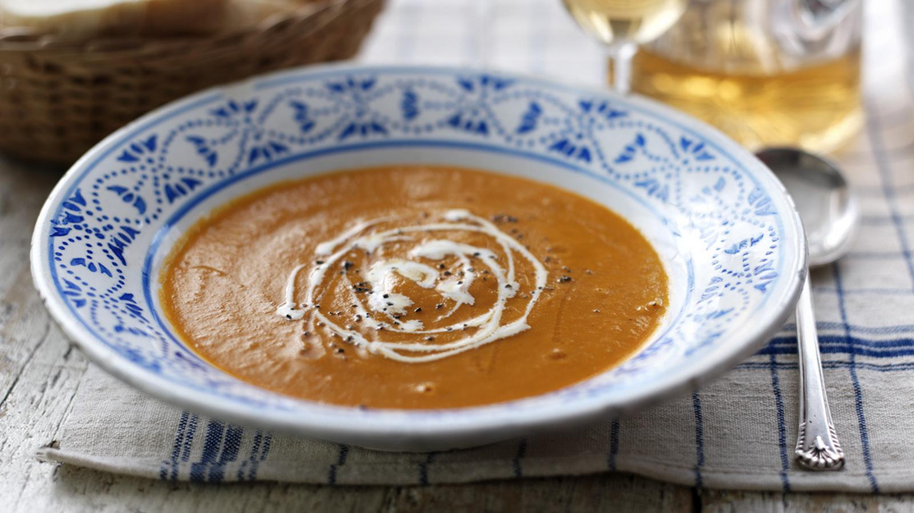

Creamy Tomato Soup

Description
This creamy tomato soup recipe is the perfect combination of naughty and nice - it's packed with vegetables but laced with a dash of sherry.
This meal, if served as four portions, provides 214kcal, 4g protein, 15g carbohydrate (of which 14g sugars), 14g fat (of which 4.5g saturates),
5g fibre and 1.1g salt per portion.
Ingredients
- 3 tbsp olive oil
- 1 large onion, chopped
- 2 garlic cloves, crushed
- 2 celery sticks, chopped
- 200g/7oz carrots, chopped
- 1 bay leaf
- 1 large sprig fresh thyme
- 750g/1½lb ripe plum or vine-ripened tomatoes, roughly chopped
- ½ tsp sugar
- salt and freshly ground black pepper
- 200ml/7fl oz passata
- 500ml/17fl oz vegetable stock
- 100ml/3½fl oz single cream or low-fat crème fraîche
- splash dry sherry
- crusty bread and butter, to serve
Method
- Heat the olive oil in a large saucepan and cook the onion for 5-6 minutes over a gentle heat until almost softened but not browned.
Add the garlic, celery, carrots, bay leaf and thyme and cook for a further 6-7 minutes, stirring occasionally, making sure the
vegetables don't stick to the base of the pan.
- Add the chopped tomatoes and sugar and season well with salt and pepper. Cook for a few minutes, then stir in the passata and
vegetable stock. Bring to a simmer, cover with a lid and cook for 35-40 minutes, until all the vegetables are tender.
- Remove the bay leaf and thyme, then blend the soup in a liquidizer or food processor. This will probably have to be done in two
batches. Pour the soup into a clean saucepan, passing it through a sieve if you want it really smooth. Stir in the cream, a splash
of sherry and extra seasoning if required.
- Pour into large mugs or bowls and serve with fresh crusty buttered bread.